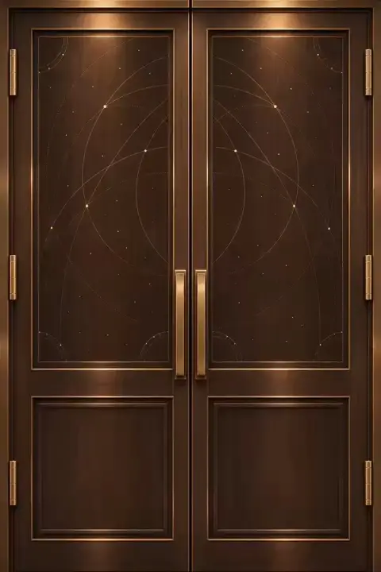

玄與九爺

入室須知
會唔會預測我一定發生乜事？
唔會。只作傳統文化閱讀與生活反思；宮位及星曜有列出依據，唔代替醫療、投資或其他專業意見。
資料會保存或傳送嗎？
排盤只留本頁，關閉或重新整理便清除。現階段只用虛構資料，唔需要電郵、姓名或詳細地址。
唔想睇動畫，可以直接填嗎？
可以。按「略過」可略過動畫與音效。開啟減少動態時用靜態畫面。
有冇付款或中途鎖住結果？
冇。呢個版本可完整睇命盤、三個方面嘅文化閱讀，同修改資料重算，冇付款步驟。
另外，借個故事整理選擇
以下係原創互動故事，唔係個人命理解讀。